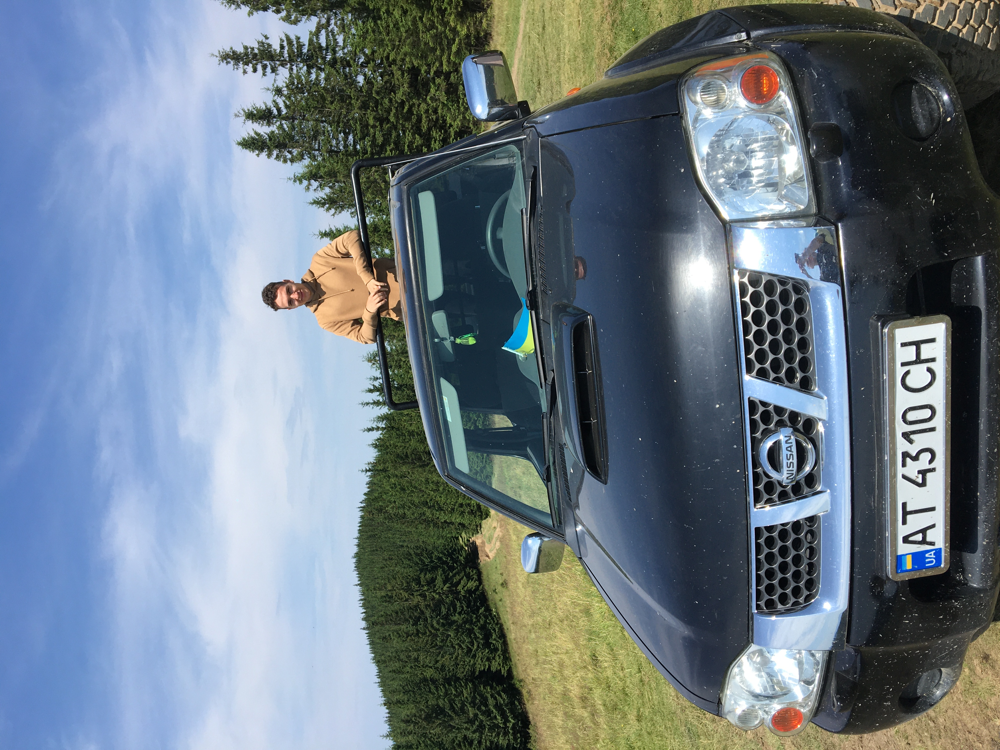

Hello, my name is Domas. At this moment I'm studying Contemporary Communication in LCC International University and I decided to create a travelling website to share my thoughts about a country or place. I do understand that it may look like I'm still young and have no experience but in 19 years I have traveled to 14 countries. I am eager to pursue this hobby further until I have fully experienced what a beauty it is to live in this world. This time I chose Ukraine as my country to write about to which I went in summer and spent there 3 weeks. You will find out more about this journey while you continue reading the website.
Ukraine is amazing and worth every second of attention. Click below to see photos and what I did in that country!
